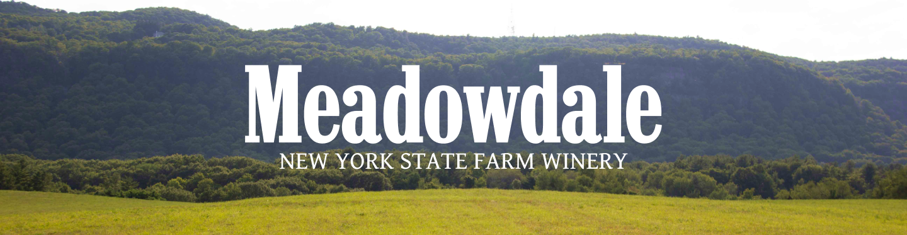
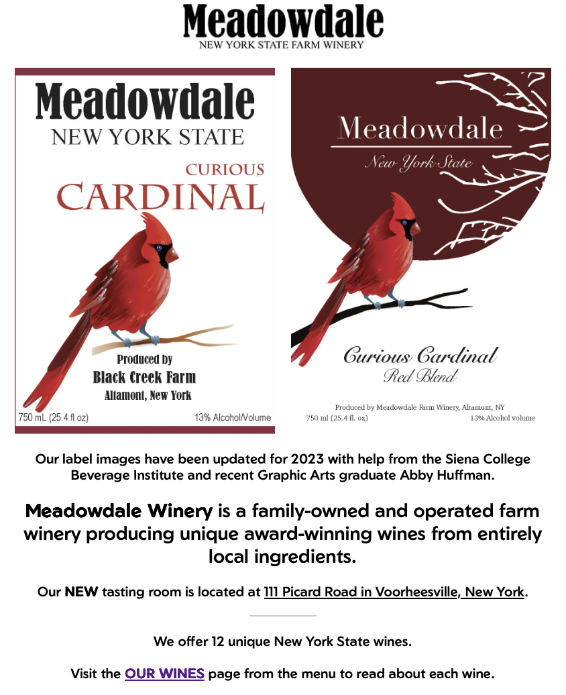
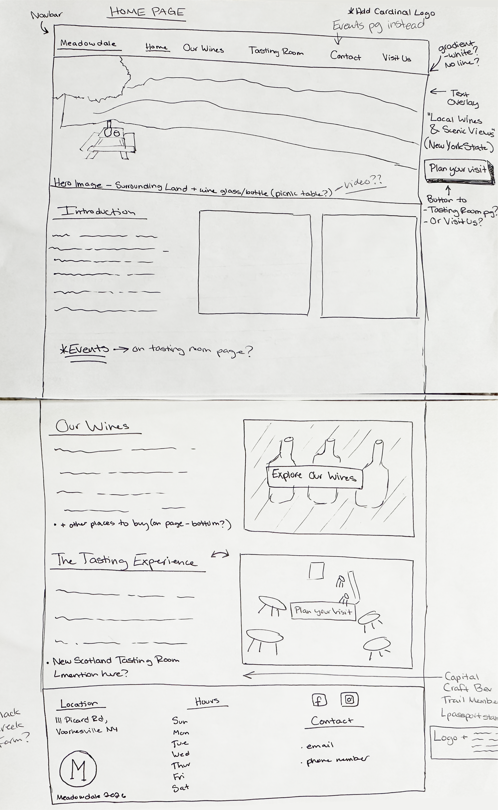
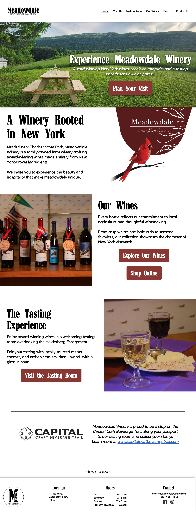
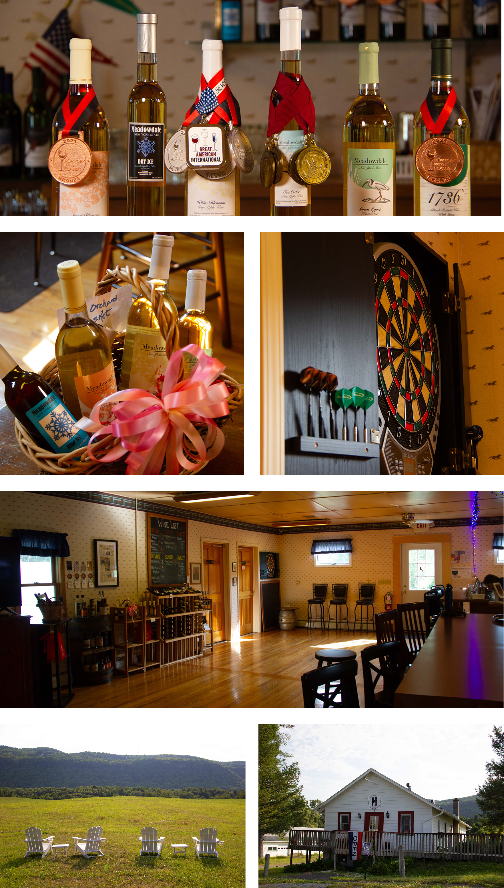
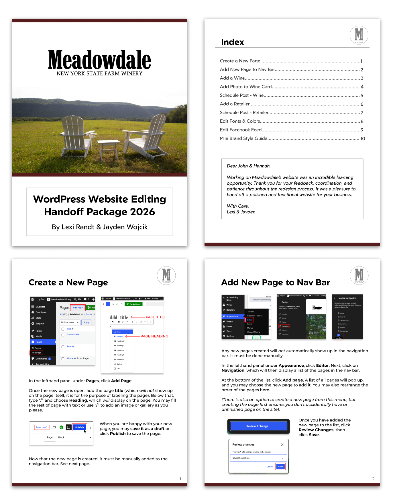

As part of a Siena Beverage Institute independent study, I worked with Meadowdale Winery to redesign their
website alongside a backend developer.
This was my second client website redesign, so I came into the project with experience
while still having to adapt my process to a new client and their needs.
The goal was to create a cleaner, more organized website that better represented Meadowdale's wines, tasting
room, land, and overall experience.

The old Meadowdale website home page,
with outdated information and no clear
hierarchy.
I started with low-fidelity sketches to explore the site's structure and page hierarchy. After discussing the
direction with the clients, I moved into Figma and developed desktop and mobile layouts.
Throughout the project, I presented designs to the clients and made revisions based on their feedback. As the
design developed, I incorporated original photography from our site visits, which helped me refine the
layouts, colors, spacing, and visual hierarchy.

My original wireframe sketch for the website home page.

Figma mockup of the home page.
During our site visits, I photographed the estate, land, tasting room, and wines. I edited the images using
Lightroom Classic and Photoshop before incorporating them into the website.
Using original photography helped the site feel more connected to Meadowdale and helped the final design come together.

Some of the photos taken at Meadowdale's tasting room.
Accessibility became an important part of the project after the client raised concerns about
accessibility-related issues facing wineries.
I researched WCAG and designed with WCAG 2.2 AA guidelines in mind, focusing on color contrast, typography,
heading
hierarchy, alt text, descriptive links, accessible forms, and responsive design. I also tested the completed
site using Silktide.
Once the designs were approved, my backend development partner implemented them in WordPress. Working
alongside the developer gave me a better understanding of how design decisions translate into a working
website.
I also created a knowledge transfer package with visual and written instructions so the client could maintain
and update the site after the project ended.

Handoff Package (cover, index, pages 1&2).
The redesign gave Meadowdale Winery a cleaner structure, updated photography, responsive layouts, and accessibility improvements while giving the client a maintainable WordPress site.